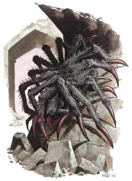

大型异怪

| 生命骰： | 12d8+60（114HP） |
| 先攻： | +7 |
| 速度： | 30英尺，掘穴30英尺 |
| 防御等级： | 21（-1体型，+3敏捷，+9天生），接触12，措手不及18 |
| 基本攻击／擒抱： | +9/+19 |
| 攻击： | 蛛腿耙抓 +15 |
| 全力攻击： | 4次蛛腿耙抓 +15 |
| 伤害： | 蛛腿耙抓 1d6+6/19-20 |
| 面宽／触及： | 10英尺/5英尺 |
| 特殊攻击： | 紧勒 3d6+9、精通攫抓 |
| 特殊能力： | 黑暗视觉60英尺、蜘腿再生、音波脆弱、震颤感知60英尺 |
| 豁免： | 强韧 +11，反射 +9，意志 +11 |
| 属性： | 力量 22，敏捷 17，体质 20，智力 3，感知 16，魅力 3 |
| 技能： | 攀爬 +9，躲藏 +3，聆听 +6，潜行 +6，侦察 +6 |
| 专长： | 强韧加强、增强重击（蛛腿耙抓）、精通先攻、闪电反射、武器专攻（蛛腿耙抓） |
| 地域： | 任何地下 |
| 组织： | 单独、聚集（2-5）或群落（11-20） |
| 挑战等级： | 9 |
| 宝物： | ― |
| 阵营： | 总是中立 |
| 进化： | 13-18HD（大型）；19-36HD（超大型） |
多腿魔蛛（地表居民常称其为"蛛腿恐怖"）是由卓尔精灵在未能通过其神�o――"蜘蛛女王"罗丝（Lolth）所设下的诸多考验之一时，被转化而成的生物。多腿魔蛛潜伏在地下深处的洞穴中；它们是近乎无脑的野兽，四处搜寻猎物，将其绞杀并吞噬。
多腿魔蛛看起来就像是一团不断扭动的、长满毛发的柔韧蜘蛛腿。每条腿的末端都尖锐无比，其中一侧覆盖着棘刺般的毛发，使其能够轻易撕裂血肉与骨骼。这种生物确实拥有一个位于数十条肢体深处的核心躯干，不过通常只有在它被杀死后，才能看到这个躯干。多腿魔蛛以一种轻快而起伏的方式移动，能够轻松地在墙壁上攀爬，或在泥土中掘进。
多腿魔蛛会捕猎任何活物，但它们尤其憎恨卓尔精灵――卓尔精灵曾将它们驱逐出社会，就像对待蛛化精灵（Drider）那样。一些邪恶种族会捕捉多腿魔蛛，并将它们关在内衬金属的坑洞中，利用它们来处理废料、尸体，甚至是偶尔丢进去的囚犯或罪犯。
多腿魔蛛对声音非常敏感，且极易受到音波攻击的伤害。它们会逃离响亮而尖锐的噪音。它们能理解地底通用语，但不会说。
多腿魔蛛潜伏在黑暗中，利用震颤感知察觉接近的猎物。它通常藏在一层泥土之下，然后爬出来擒抱对手。多腿魔蛛需要数小时才能吞噬受害者，因此它通常会把尸体拖到安全的地方再进行食用。
紧勒（Ex）：成功进行擒抱检定后，多腿魔蛛可以紧勒被抓住的对手，造成3d6+9点钝击伤害。
精通攫抓（Ex）：若多腿魔蛛以至少两次蛛腿耙抓命中至少比自身小一个体型等级的对手，它在造成正常伤害的同时，可以尝试以一个自由动作发起擒抱（擒抱加值+19），且不会引发借机攻击。若成功抓住对手，则在同一轮内同时进行紧勒。此后，多腿魔蛛可以选择正常进行擒抱，或仅用其蛛腿抓住对手（擒抱检定有-20罚值，但多腿魔蛛本身不被视为被擒抱）。无论哪种情况，它在后续回合中每成功一次擒抱检定，都会自动造成耙抓与紧勒伤害。
蜘腿再生（Ex）：敌人可以攻击多腿魔蛛的蜘腿，但仅限于那些实际正在抓住对手的附肢。一条蜘腿的防御等级为19（接触12），可承受20点伤害。失去一条蜘腿不会伤害该生物（即该伤害不计入其生命值总数），多腿魔蛛会在一天内重新长出该肢体。
震颤感知（Ex）：多腿魔蛛可以自动感知60英尺范围内接触地面的任何东西的位置。